VS Code is a bit different than other IDEs. The goal as a developer in VS Code is to customize your editor with plugins for every project. That is the norm and everyone is expected to add features this way. Because of this, I will be showing you some universal extensions for you to add to the IDE.
You can read the original how to read large code sources to see the best ways to navigate humongous code sources in an IDE agnostic way. As every IDE is different this article specifically is for VS Code.
Required extensions
Some features require extensions. I will be trying to keep the plugins I recommend universal to all languages, workflows and frameworks.
1. Build tool extension: Most build tools like Visual Studio Solutions, Gradle, CMake, NPM, require you to integrate the tool with the IDE. It is impossible to start most projects efficiently without an extension for the build tool. Some build tools are okay without an extension but most require it.
2. Get a language specific intellisense extension: These are different per language
3. GitLens: This extension includes additional GUIs for Git which are useful for debugging and managing your commits.
4. Easy icon theme: The project explorer is easier to read with the right icons. I find easy icon theme great for readability. (Optional)
You need a solid build tool
In VS Code this is the hardest part about setting up a workflow with a large code source. Before we even start learning a large code source we need to create build tasks which are compatible with the project and the team.
In case you are not familiar, build tasks are individual compilations of the code. You can create a debug build task, a release build task and also specify libraries which are only included in release or debug compilation.
In Javascript for instance you create build tasks in package.json, like this:

Or in Java you have Gradle build tasks like this:
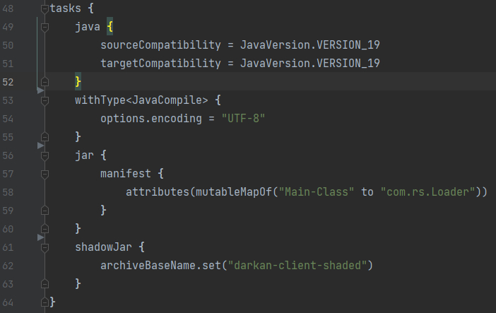Gradle and NPM are build tools and those pictures show the build tasks the developers use inside the build tool. This is what must first be focused on in any new project or large code source you are trying to work with.
VS Code compatibility
You will find certain frameworks are more compatible with VS Code out the box. ElectronJS, for instance, is much more compatible with VS Code than say a Visual Studio C++ solution project.
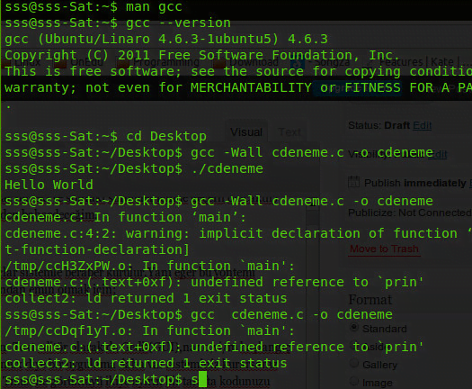In fact, Visual Studio C++ solution projects, some JetBrains gradle builds and many obscure languages have no support in VS Code. Even given our free and open-source extension marketplace you will find many projects are locked into the IDE they were created in.
So, before even considering using VS Code for a large code source take at least a few hours to see if the IDE is compatible with both the source and team.
This applies to all IDEs. I believe for most developers the inability to use Visual Studio Code for a project is a special type of disappointment. This IDE is super lightweight, hyper customizable and free. For these reasons I can see why people feel this way.
I have to state this here. Developers have a belief that anything can be coded in Visual Studio Code. And, while this is somewhat true, it is impractical for certain cases.
Many developers say if you can't get a project working in VS Code then you have a skill issue, not an IDE issue. I am aware we can do everything from command line. Hyper competent developers can run any project in command line, I am sure.
But, even doing this, if the team you are working with doesn't want the change it may be best to stick to the IDE of the project and away from VS Code. Often it is impractical to recreate build tasks for those two reasons; the team & IDE support.
But if you get the project builds working and the team is fine with it, then lets get into it.
Find a shortcut to navigate the stack
The first thing we should learn to do is go up and down the code stack. The code stack is a series of calls in a code project. The higher up the stack, the more abstract the code. The lower the stack the more specific the code.
Take a look:
 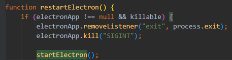
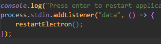
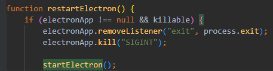
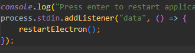
Typically we get more lines of code and more granular as we go down the stack. It is essential that we know and explore our code sources by going up and down, reading how everything is implemented. This is the primary way you should be learning large code sources.
With Jetbrains IDEs you have a hotkey which goes down the stack and if there are no lower implementations, you then go up one. However in VS Code you have to manually choose whether or not to go up and down. If there are no lower layers of the stack it just shows up blank.
So let's see how to do this.
Find all references
The easiest way to go up the stack in VS Code is to right-click a variable, function or class and choose "find all references".

This pulls up a panel which shows you all the usages going up the stack of that function, class or variable. The panel looks like this:
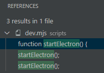Find all implementations
The easiest way to go down the stack is to right-click a variable, function or class and choose "find all implementations".

The panel for going down the stack is the same:

Super easy, a little more cumbersome than JetBrains, but the IDE overall uses way less resources and is much faster. It is a trade off.
Show call hierarchy
Unlike Visual Studio, going up and down the stack with "find all references" and "find all implementation" is sufficient. In Visual Studio these two are much less intuitive and call hierarchy is the most useful way to go up and down.
So, I would not bother with call hierarchy at all as it is the same thing as "find all references" here. I believe its only there because Microsoft made both Visual Studio & VS Code and had to be consistent.
Find a shortcut to link the file you are in to the project explorer
When going up and down the stack you need a way of seeing where in the folder structure that level of the stack is located. It is much more difficult in other IDEs. Thankfully, this is super easy in Visual Studio Code.
Just right-click your active folder and select "reveal in explorer view"
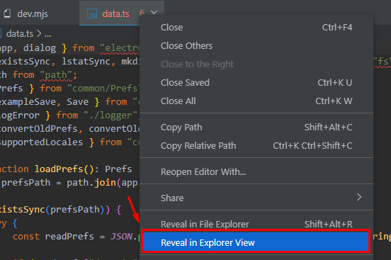 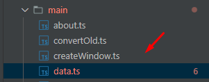Use a structural view
Wow, I am impressed with VS Code. I might actually start using it more. There is a built-in structural view called "Outline". When you open up a huge file with many functions, class definitions, variables, etc. etc. you can use a structural view to see where everything is in that file.
This is much faster than scrolling through the file looking for a specific function.
Check it out:
Select an active file and open up outline. It will look like this:
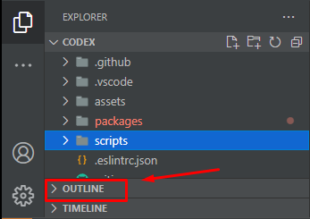
This outline is a succinct summary of a 200 line file. I can click each function noted by the "building block" icon and it will automatically go to that location in the file. Practice using this as a habit, it speeds up your navigation by quite a bit.
Use a find in all files
Another super easy feature of VS Code. When you remember a function or variable but do not know the location, you can look it up here:
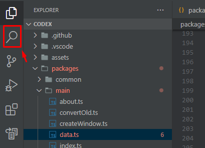Just type it in and voila, super easy.
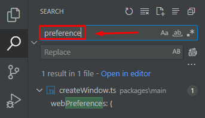Always make sure you have intellisense
Intellisense is just auto finishing your code with potential functions, classes or variables.
Take a look:

Often this does not come with VS Code. But, in every language there are extensions for intellisense. Also, the building block icon is always a function in most IDEs. That is because functions are the building blocks of code sources.
Use a good commit viewer and diff tree
There are many benefits to using GUI for Git. There are purists out there who say command line Git is the best way to manage projects.
Personally, I have found this methodology lack luster. In some remote sessions with friends I have seen some people opening a Git GUI as though it were a guilty pleasure.
Just use the GUI. It's really useful for seeing what happened in a commit and team.
Here are 4 primary tools to use
Commit graph
For Visual Studio Code commit graphs require an extension. There are quite a few out there but I would recommend GitLens.
With this extension you get a graph that looks like this:

Inside the larger red box on the left you see a commit history. This essentially breaks down all the latest updates to your project. Each commit is named, like "Merge codex v.2.0.2". If we select it, like the small box inside the larger one on the left, we see "files changed" on the right. You can see the differences per commit.
Commit diff viewer
You can then double click inside files changes and see this:
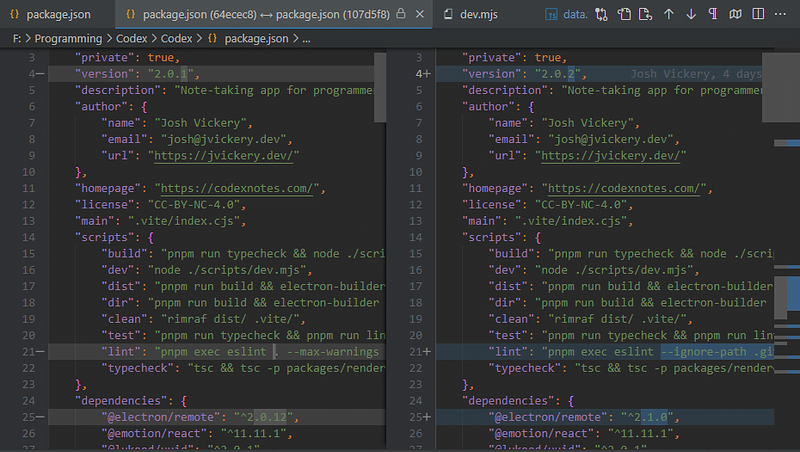You can then see the difference with the previous commit on the left and the next commit on the right. You can do this for every file changed

Just double click one. This way you can see all the code changes your team mates had done.
Commit compare
Often, in huge projects many team members are adding to the source. Perhaps one developer makes a mistake that we don't see until months later. But, we don't know how to fix it or where in the source it could be.
For this very purpose and also just to learn how different updates were added, we can use commit compare. We are essentially comparing the code source between two points in time.
The way I am going to show how to do this is only available in GitLens, which is why I made it a requirement above.
So, here it is in steps:
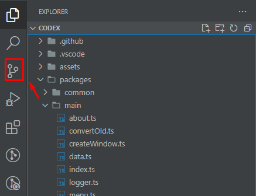 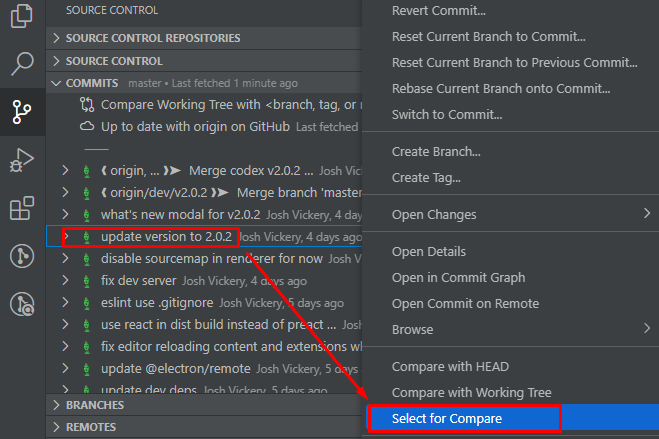
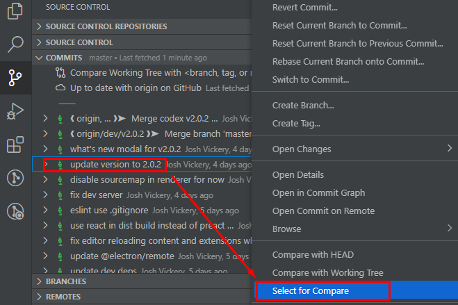
 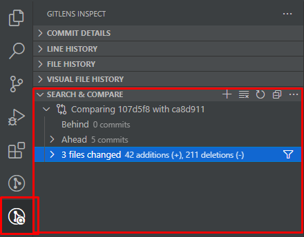
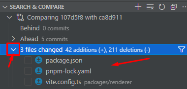
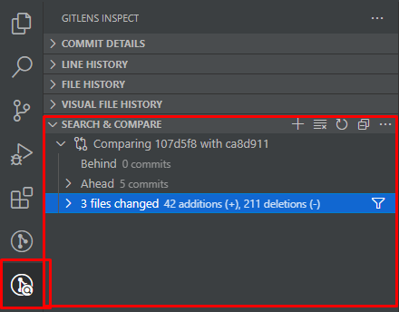
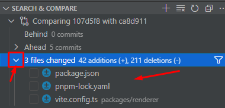
As you can see, this whole process is not optimized in Git Lens. But it is still highly useful.
Now we can compare file changes between two points in time in the past of our project. This is great for learning how a source was implemented at different parts of time.
Also, it is good for debugging. I have used this feature to fix bugs which were active for 6+ months and no developer could figure it out. It took me a few days of going between commits and comparing changes in a project 1000s of files large.
Between commits I would check the files changed and checkout that commit. I found the exact commit where the developer introduced the bug and did a commit compare with the one before it. A simple 1 line change cleared up the bug after 6 months and we were finally able to release the software.
Using commit compare is something I use often, just to see what other developers have been up to in my projects. I highly recommend using it to learn and keep up with project updates.
Timeline
Another super easy way to look at a commit viewer is to use the timeline feature for that file. You can select a file and click timeline:


And, you are able to see all commits to that file. Very useful, very easy.
Conclusion
There is one thing that I left out. That is UML diagrams. It has even less support than JetBrains & Visual Studio, so I decided to leave it out.
But, if you are writing code in an object oriented project, you should always prioritize learning the class structure. As in, which objects are inherited from what and what functions are added to the children classes. Stuff like that.
If you can find a way to generate UML diagrams automatically more power to you. But it is different per language and not every language supported in VS Code has UML generation.
Anywho, I hope you learned something
CTA: Check out my other articles and follow me on medium.
Happy coding!